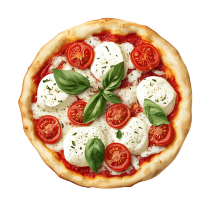

Margherita Pizza
Home

Servings: 4
Prep Time: 15 min
Cook Time: 15 min
Total Time: 30 min + time to make pizza dough and let it rise
Ingredients
- 1 can crushed tomatoes
- 3 cloves garlic
- 3/4 tsp salt
- 1/2 tsp sugar
- 1/2 tsp black pepper
- 2 tbsp extra-virgin olive oil
- Flour (for stretching the dough)
- 2 homemade pizza doughs
- 200 g fresh mozzarella
- 50 g Parmigiano-Reggiano
- 15 g chopped fresh basil
- 1 tbsp cornmeal (for bakin)
Instructions
- Make the marinara souce: In a medium bowl, mix tomatoes, garlic, salt, sugar, pepper, and oil.
- Preheat the oven to 250 ℃ and set an oven rack a in the bottom position. Dust a baking sheet with half the cornmeal.
- On a floured surface, stretch the dough (30 cm diameter) and transfer to the baking sheet.
- Spead the sauce over the dough, leaving a border around the edges. Bake for 7 minutes, until the crust is partially cooked. Take out and spread half of the mozzarella and Parmigiano-Reggiano. Put back into the oven and cook until the crust is finished and cheese is melted (about 4 minutes). Remove the pizza from the oven, sprinkle with basil, and slice. Repeat with remaining dough and ingredients.
Recipe source: Margherita Pizza by Jennifer Segal